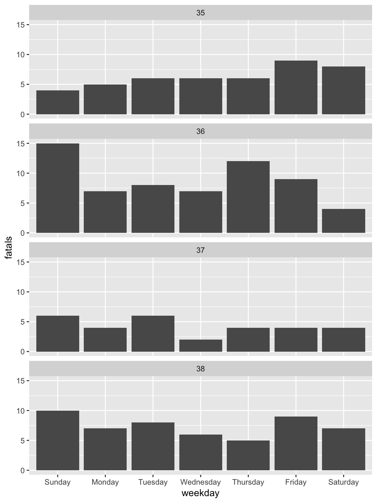
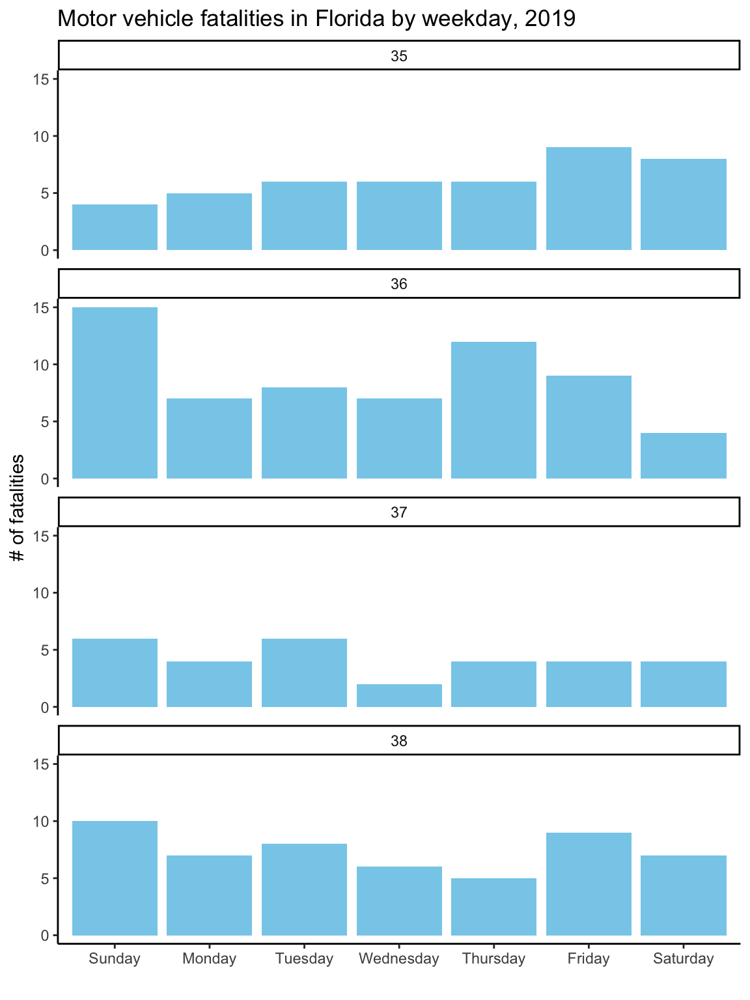

2.2 Building a plot
Now that you have and idea of how different elements combine to create a plot, I’ll walk you through the steps to “layer” these elements together to create these two example plots.
2.2.1 Reading data
First, you’ll need to bring the example data into your R session. If you followed the steps in the “Prerequisites” section, you should have a comma-separated file8 comma-separated file format. A flat file format (try opening the file in a plain text editor—unlike a binary file format like Excel, you should be able to read all the content) where each column entry is separated by a comma. This is a common file format for tabular data that can be read into and written from most statistical programs (including R, Excel, and SAS). in a “data” subdirectory of the R Project you downloaded. Also, if you followed the steps in the “Prerequisites” section, you should have installed all the necessary R packages for this example.
While there are functions in base R that import comma-separated files, I think the
functions in the readr package (Wickham, Hester, and Francois 2018Wickham, Hadley, Jim Hester, and Romain Francois. 2018. Readr: Read Rectangular Text Data. https://CRAN.R-project.org/package=readr.), a package in the tidyverse,
has some nicer defaults. To use functions in this package, you first need to load
it into your R session using the library function:
library("readr")The library function must specify the name of the package you’d like to load (in
this case, “readr”). If you have forgotten to install the “readr” package before you
run this function, you’ll get the message:
Error in library(readr) : there is no package called ‘readr’If you get that message, go back and re-read the “Prerequisites” to make sure you’ve
installed all the required packages.9 There is also a small chance, especially if
you’re using a computer for which you don’t have superuser privileges, that something
else is going on. Double-check that you installed the package you’re trying to load,
and if loading the package still doesn’t work, talk with your IT team about
installing and loading R packages on your computer. For some company- or
government-issued computers, the computer might have been set up to restrict
installing new software, or to save installed software somewhere other than the
default locations where R searches with library.
Now that you’ve loaded readr, you can use the package’s read_csv function10 For
this and any other R function, you can open a help file in RStudio to give you
more information about the function, usually including some examples of how to
use if. Just type ? and then the function name—for this example, ?read_csv.
to read in the data. The one argument this function requires is the
file path11 file path. The directions for where to find a file within your
computer’s directory structure. If the file you want is in your current working
directory, this will just be the filename of the file. If it’s not, but in a directory
close-by, you can use a relative pathname to give the directions from the current
working directory. Since the file you want to read in is in a subdirectory called
“data” of the current working directory, the filepath here is
“data/daily_fatalities.csv”.
to the data file.
daily_fatalities <- read_csv("data/daily_fatalities.csv")## Parsed with column specification:
## cols(
## date = col_date(format = ""),
## week = col_double(),
## weekday = col_character(),
## fatals = col_double()
## )Don’t be alarmed by the message that’s printed out after you run the function!
In data frames in R, each columns can have one of several different classes
(some examples: character: “Florida”, date: 2017-09-10, integer: 17,
double: 17.0). The read_csv function looks at the values in each column in the
data and tries to guess what class each column should be, and this message
tells you what it guessed, so you can check. In this case, the number of
fatalities will always be a whole number, so the “integer” class would have
also worked well, but there should be no problem with the column having a
“double” class for the plotting we’ll be doing, so everything looks fine.
The previous code used a gets arrow12 gets arrow. The function
<-, which allows you to save the output from running the code on the right-hand
side of the arrow to an object with the name on the left of the arrow. This is a
funny kind of function called an infix function, which goes between two
function arguments instead of putting the arguments inside parentheses. If you
want to look up the helpfile for an infix function, wrap it in backticks:
?`<-`. to save the data you read in to an R object called daily_fatalities.
Now, anytime you want to use this data, you can reference it with the name
daily_fatalities instead of needing to read it in again. For example, you
can print out the start of the data by calling the object name by itself:
daily_fatalities## # A tibble: 28 x 4
## date week weekday fatals
## <date> <dbl> <chr> <dbl>
## 1 2017-08-27 35 Sunday 4
## 2 2017-08-28 35 Monday 5
## 3 2017-08-29 35 Tuesday 6
## 4 2017-08-30 35 Wednesday 6
## 5 2017-08-31 35 Thursday 6
## 6 2017-09-01 35 Friday 9
## 7 2017-09-02 35 Saturday 8
## 8 2017-09-03 36 Sunday 15
## 9 2017-09-04 36 Monday 7
## 10 2017-09-05 36 Tuesday 8
## # … with 18 more rowsBy default, read_csv reads the data into a structure called a tibble,13 tibble.
A slightly fancier dataframe, which is a tabular data format in R, where there are
rows and columns, with each column having data with the same class (e.g., character,
integer, date) and all columns having the same length. Values in the columns should
“line up” across the rows—for example, in this case, the second value in the
fatals column should be the number of fatalities for the date given by the second
value in the date column. Compared to a dataframe, a tibble prints out more nicely
when you call the object name alone, among some other advantages. and you
can see that the top of the print-out notes this. It also gives the dimensions
(28 rows and 4 columns) and, under each column name, the class of the column.
When you start plotting this data, you’ll use the dataframe’s object name
(daily_fatalities) to reference the full dataset and each column name
(e.g., date for the date of the observations, fatals for the number of
fatalities observed on that date) to reference specific elements of the data.
2.2.2 Plotting by layers
To create a data visualization using ggplot2, we’ll add up “layers” for each of
the plot elements described earlier. In this section, I’ll step through this process.
First, we’ll create a ggplot object using the ggplot call, and then we’ll add
layers to it with +. To use these functions, you’ll need to load the ggplot2
package:
library("ggplot2")For the first step, create the ggplot object. When you create this object, specify
the dataframe with the data you’d like to plot using the data parameter:
ggplot(data = daily_fatalities)
Figure 2.3: Step 1 of layering a plot: Creating the ggplot object. At this point, nothing’s actually plotted, because we haven’t added any geoms yet.
Figure 2.3 shows the output with this single, initial layer. We haven’t added any geoms yet, so the plot isn’t showing anything. Since we’ve specified the
data, however, we’ll be able to add geoms where we map aesthetics to columns in the
dataset. Let’s do that next, and add a layer with a line (geom_line) for the number
of fatalities per day. We’ll use the aes function inside the geom_line call
to specify that we want the x-axis to show the value in the date column and the
y-axis to show the value in the fatals column:
ggplot(data = daily_fatalities) +
geom_line(aes(x = date, y = fatals))Figure 2.4: Step 2 of layering a plot: Adding a line geom. In this case, the x-axis (x aesthetic) is mapped to the ‘date’ column in the data, while the y-axis (y aesthetic) is mapped to the ‘fatals’ column.
The result is in Figure 2.4. You can see that you now have a line showing
the number of fatalities per day. Next, we can add a layer on top of the line with a
point (geom_point) for each date showing the number of fatalities. Two of the
aesthetics for this geom (x and y) will be the same as for the line. However, we
also want to map color to day of the week. Since day of the week is in a column
called weekday, we can specify this aesthetic as color = weekday within the aes
call. Try running the following code to add this layer:
ggplot(data = daily_fatalities) +
geom_line(aes(x = date, y = fatals)) +
geom_point(aes(x = date, y = fatals, color = weekday))Figure 2.5: Step 3 of layering a plot: Adding a point geom. The x and y aesthetics are the same as for the line geom, but now we’re also mapping color to the ‘weekday’ column in the data.
You should get the plot shown in Figure 2.5. You may have noticed that the set of colors that is used for weekdays is different than in the plot in Figure 2.1. This set of colors is actually specified by the “scale” element of the plot, so we’ll change that in a different layer.
So far, we’ve customized some of the plot aesthetics by mapping them so that their values are based on observations in the data. However, sometimes you’ll want to change an aesthetic to a constant, where the aesthetic changes for the aesthetic for all of the observations from the data, but in the same way.
For example, for this plot, we’d like the line to be dark gray for all observations,
and we’d like the points to be a little bigger. To specify a constant aesthetic,
move it outside of the aes call. For colors, you can set a constant value to
one of the many named “R Colors”14 See this website for examples and names
(make sure you put the color name inside parentheses—otherwise, R will think you’re
refering to an R object). Constant point size values can be specified using numbers,
where larger numbers will make bigger points and the default value is somewhere
around 1.15 For
an in-depth look at aesthetic specifications, see
the ggplot2 specs vignette Try numbers bigger than 1 (e.g., 1.5, 2) for bigger points and smaller
values (e.g., 0.8, 0.5) for smaller points.
The following code will set the line to be dark gray and the points to be a bit larger (result in Figure 2.6):
ggplot(data = daily_fatalities) +
geom_line(aes(x = date, y = fatals), color = "darkgray") +
geom_point(aes(x = date, y = fatals, color = weekday), size = 2)Figure 2.6: Step 4 of layering a plot: Adding constant aesthetics. In this step, we’re making the line dark gray for all observations and the points a bit larger. Note that these aesthetics, since they’re constant, are set outside of the ‘aes’ call. Also, note that thee color is specified inside quotation marks.
We’re using the default coordinate system for this plot, so we don’t need to add
a layer for the coordinate system. For plots where you need to change from this
default coordinate system, you’ll add a layer that starts with coord_. For example,
in the “Map” section, you’ll see how to use a geographic coordinate system using
coord_map. If you want to flip your x- and y-axis (there are a few examples where
this is useful), you can add a layer with coord_flip.
While we’re also using the default scales for the x aesthetic, we aren’t for
the y or color aesthetic. The change to the y scale is very minimal: we’re just
expanding it to include 0. This can be done by adding the layer expand_limits
with the y parameter set to 0.
To change the color scale, you need to add a layer to specify the alternative color scale. We’ll use a color scale called “viridis”. This is good for discrete data (like here, where we’re showing day of the week rather than a continuous number), it really shines when you’re plotting continuous values. The order of the scale is clear to those who are colorblind, and it’s also clear when printed out on a black-and-white printer.
To change the color scale to use this scale, add a layer with scale_color_viridis_d.
The “d” here is for “discrete”; if you were using color to show a continuous
value in the data (e.g., a column with an integer or double class), you’d
add a layer called scale_color_viridis_c instead. The final result of these
scale customizations is shown in Figure 2.7.
ggplot(data = daily_fatalities) +
geom_line(aes(x = date, y = fatals), color = "darkgray") +
geom_point(aes(x = date, y = fatals, color = weekday), size = 2) +
expand_limits(y = 0) +
scale_color_viridis_d()Figure 2.7: Step 5 of layering a plot: Changing the color scale. This step changes from the default color scale to the ‘viridis’ color scale.
The function for this layer has a few options for customization. For example, try
changing it to scale_color_viridis_d(option = "A") or
scale_color_viridis_d(direction = -1). To see all its options, check its
helpfile with ?scale_color_viridis_d.
Next, we’ll change the scale labels. By default, the label for each scale is the
name of the column in the data that the aesthetic was mapped to (x: “date”,
y: “fatals”, color: “weekday”). You can add a labs layer to change these
to labels that are easier to understand. The other
labeling we’d like to do is to add a title and subtitle, which we can do with
a ggtitle layer (the subtitle is added with the sub parameter of this layer).
The final result of adding these layers is shown in Figure 2.8.
ggplot(data = daily_fatalities) +
geom_line(aes(x = date, y = fatals), color = "darkgray") +
geom_point(aes(x = date, y = fatals, color = weekday), size = 2) +
expand_limits(y = 0) +
scale_color_viridis_d() +
labs(x = "Date", y = "# of fatalities", color = "Day of week") +
ggtitle("Motor vehicle fatalities in Florida",
subtitle = "Late summer / early fall of 2019")Figure 2.8: Step 6 of layering a plot: Customizing labels. The ‘labs’ layer customizes not only the x and y axis labels, but also the legend title for the color scale. The title and subtitle are added with a ‘ggtitle’ layer.
The last layer we need to add is a theme layer. While we’re using most of the
elements from the default theme (theme_gray), we do want to change the position
of the legend. For a time series plot like this, the change can be helpful, as it
lets us create a plot that’s much wider than it is tall. You can move the legend
using the theme layer with an argument specified for legend.position. With
the theme function, you can customize almost any of the background elements of a
plot.16 See the helpfile for “theme” with ?theme for a full listing.
However, you’ll usually only want to do that for a few elements—if you want
to change a lot of elements, there is a set of functions that start theme_ that
will let you change to one of several “themes” that change many elements at once
(as I’ll show in the next example).
If you find you’re often using theme to specify lots of elements by hand, you
can create your own theme_* function (fill in * with the name of your choice!).
ggplot(data = daily_fatalities) +
geom_line(aes(x = date, y = fatals), color = "darkgray") +
geom_point(aes(x = date, y = fatals, color = weekday), size = 2) +
expand_limits(y = 0) +
scale_color_viridis_d() +
labs(x = "Date", y = "# of fatalities", color = "Day of week") +
ggtitle("Motor vehicle fatalities in Florida",
subtitle = "Late summer / early fall of 2019") +
theme(legend.position = "bottom")Figure 2.9: Step 7 of layering a plot: Customizing the theme. Move the color legend to below the plot.
As one final detail, if you were looking very closely, you may have noticed that the order of the days of week are different in the original plot from our final version here. That’s because, by default, discrete character-class values are ordered alphabetically. We can change this order, and should, to be the order that week days occur. To do this, we need to change the column class to a factor class17 factor class. An R class for values that take character names, but that describe categories, for which you expect values to show up more than once in your data. In this data, the day of week is an example, since it is expressed as a character variable (“Monday”, “Tuesday”, etc.), but we expect there to be multiple observations with, e.g., “Monday”. If you have a varible that you expect to be unique (e.g., name of study subjects, unique ID number), the column should be in a character, not a factor, class. In R, each possible catogory for a factor is called a level. You can change the order of the levels of a factor, and this will change the order they’re shown on a plot. and then change the order of that factor’s levels.
To do this, we’ll need to load a few additional R packages (you’ll also use these
in the “Tidy” section, which has much more on manipulating datasets). The
forcats package (Wickham 2019Wickham, Hadley. 2019. Forcats: Tools for Working with Categorical Variables (Factors). https://CRAN.R-project.org/package=forcats.) has functions for working with factors, including
a function we can use to reorder the factor levels. The magrittr package
(Bache and Wickham 2014Bache, Stefan Milton, and Hadley Wickham. 2014. Magrittr: A Forward-Pipe Operator for R. https://CRAN.R-project.org/package=magrittr.) includes two infix functions we’ll use to make the code
cleaner: the pipe operator (%>%) and the compound assignment pipe operator (%<>%).
The dplyr package (Wickham, François, et al. 2019Wickham, Hadley, Romain François, Lionel Henry, and Kirill Müller. 2019. Dplyr: A Grammar of Data Manipulation. https://CRAN.R-project.org/package=dplyr.) includes a number of simple but powerful functions
for manipulating tibbles.
The resources listed in the “Learn More” part of the Tidy" section go into detail for how
to use all these functions. Briefly, the mutate function used twice to change the
values in the “weekday” column:
first, to convert the class of the column to a factor (as_factor) and second to
change the order of those levels (fct_relevel) by hand, to start with Monday and
go in order through Sunday. The compound assignment pipe operator (%<>%) allows
us to perform all those operations to columns inside the “daily_fatalities” tibble,
and then to save the result back to the same R object (overwriting the earlier
version of the tibble).
library("forcats")
library("magrittr")
library("dplyr")
daily_fatalities %<>%
mutate(weekday = as_factor(weekday)) %>%
mutate(weekday = fct_relevel(weekday,
"Sunday", "Monday", "Tuesday", "Wednesday",
"Thursday", "Friday", "Saturday"))Now when we run the same ggplot code, you can see that the order of the days of
week in the color legend, and the order the colors are assigned to week day, have
changed (Figure 2.10).
ggplot(data = daily_fatalities) +
geom_line(aes(x = date, y = fatals), color = "darkgray") +
geom_point(aes(x = date, y = fatals, color = weekday), size = 2) +
expand_limits(y = 0) +
scale_color_viridis_d() +
labs(x = "Date", y = "# of fatalities", color = "Day of week") +
ggtitle("Motor vehicle fatalities in Florida",
subtitle = "Late summer / early fall of 2019") +
theme(legend.position = "bottom")Figure 2.10: Change the order of the days of week from alphabetical to temporal by transforming the data before plotting.
The second example plot we can go through much more quickly. There are two
elements I’d like to point out: the layer for faceting and the layer for the theme.
The facet_wrap function separates the plot into small multiples
based on the values in a column of the data. By default, all the scales (e.g., x-axis,
y-axis) will be the same across all the small multiples, allowing for an easier
comparison across the plots. The other layers in this code should now be somewhat
familiar to you: the ggplot call initializes a ggplot object with the
“daily_fatalities” dataset, just like in the last plot, while the geom_col layer
adds a column geom where the x aesthetic is mapped to the value in the “weekday”
column and the y aesthetic is mapped to the value in the “fatals” column.
Figure 2.11: Adding a facet layer to a plot. The plot is now faceted by the ‘week’ column in the dataframe, with all the facets lined up vertically in a single column (‘ncol = 1’).
To change to the theme_classic, all you need to do is add a theme_classic layer
(Figure 2.12).
Figure 2.12: Changing the theme. The ’theme_*’ family of functions can quickly change many of the background elements of a plot with a single layer call.
Most of the rest of the layers for the plot are very similar to the first plot.
They include changing the fill18 fill aesthetic. While all geoms have
a color aesthetic, some also have a fill aesthetic. These include columns,
bars, polygons, and points with certain shapes. In these cases, ‘color’ will specify
the outline of the geom while ‘fill’ will specify the inside. Each geom has a set of
required aesthetics and a set of possible aesthetics. To find each set for a geom,
go to its helpfile (e.g., ?geom_col) and scroll down to the “Aesthetics” section.
of the geom by mapping it to a constant fill
aesthetic (color = "skyblue" in the geom_col call), customizing the labels with
a lab layer, and adding a title with ggtitle. The result of adding these layers
is shown in Figure 2.13
ggplot(data = daily_fatalities) +
geom_col(aes(x = weekday, y = fatals), fill = "skyblue") +
facet_wrap(~ week, ncol = 1) +
theme_classic() +
labs(x = "", y = "# of fatalities") +
ggtitle("Motor vehicle fatalities in Florida by weekday, 2019")Figure 2.13: Customizing the labeling and adding a constant fill aesthetic. Note that the constant fill aesthetic is specified outside the ‘aes’ call for the geom, and that the color is specified inside quotation marks.
As with the first graph, to take the plot to its final stage, you’ll need to
change the input data a bit. In this case, this step is to create clearer labels for
the facets. The week number (e.g., 35) won’t mean much to most viewers. A label giving
the date of the first day in the week (“Week of August 27”) will be more helpful.
To create these new labels, you can use group_by, mutate, and first functions
from the dplyr package (which you have already loaded if you’ve worked through
the examples in order) to create a column called ‘first_day’ with the date of the
first day in each week. Then you can use mutate (also from dplyr) to create the
‘week_label’ column from the existing columns of the tibble. This code uses the
month and day functions from the lubridate package (very useful for
working with dates) (Spinu, Grolemund, and Wickham 2018Spinu, Vitalie, Garrett Grolemund, and Hadley Wickham. 2018. Lubridate: Make Dealing with Dates a Little Easier. https://CRAN.R-project.org/package=lubridate.) to extract the month and day from the ‘first_day’
dates, and then paste (from base R) pastes these together with “Week of”.
Finally, the as_factor and fct_reorder calls (both from forcats, which you
also should have loaded if you’ve followed the examples in order) get this new
column in the right order, so that the facets show up in temporal order rather
than alphabetical.
Once you’ve made these changes to the ‘daily_fatalities’ tibble, you should get the final version of the plot when you re-run the plotting code used in the last step, getting Figure 2.14.
library("lubridate")
daily_fatalities %<>%
group_by(week) %>%
mutate(first_day = first(date)) %>%
ungroup() %>%
mutate(week_label = paste("Week of",
month(first_day, label = TRUE, abbr = FALSE),
day(first_day))) %>%
mutate(week_label = as_factor(week_label),
week_label = fct_reorder(week_label, week, .fun = min))
ggplot(data = daily_fatalities) +
geom_col(aes(x = weekday, y = fatals), fill = "skyblue") +
facet_wrap(~ week_label, ncol = 1) +
labs(x = "", y = "# of fatalities") +
theme_classic() +
ggtitle("Motor vehicle fatalities in Florida by weekday, 2019")Figure 2.14: To create better facet labels, you can first make some changes to the dataset and then facet by the newly created ‘week_label’ column rather than the ‘week’ column.